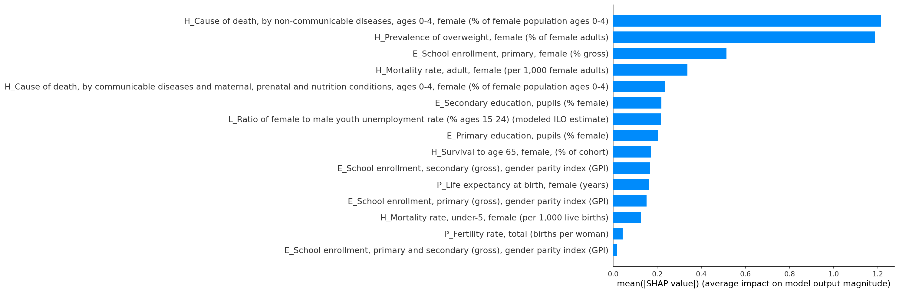
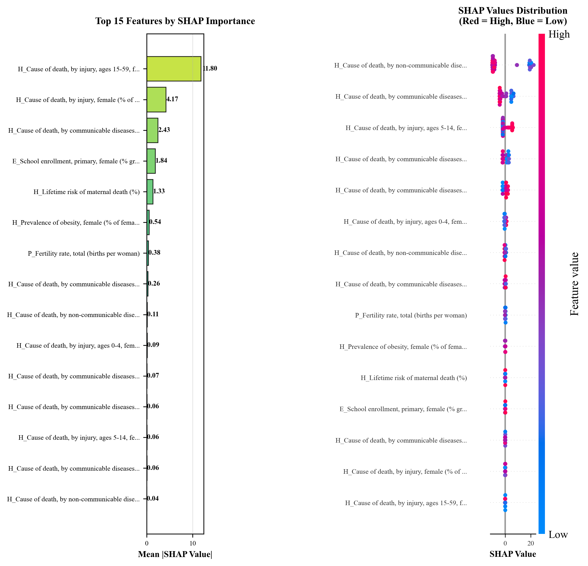

| Rank | Model | R² (Test) | RMSE | MAE | CV R² |
|---|---|---|---|---|---|
| 1 | Random Forest | -0.8680 | 6.3589 | 5.7786 | -0.2424 |
| 2 | XGBoost | -0.9621 | 6.5170 | 5.7469 | -0.3261 |
| 3 | Gradient Boosting | -1.1768 | 6.8643 | 6.1564 | -0.3014 |
Models ranked by Test R². Best model highlighted.
Targets Analyzed:
Key Findings:
R² (Test): -0.8680 RMSE: 6.3589 MAE: 5.7786 CV R²: -0.2424
Note: Negative R² indicates prediction below baseline. Likely due to small sample size (n=52 countries, 13 test) and high target variability. Model used with caution for qualitative insights only.
| Rank | Model | R² (Test) | RMSE | MAE | CV R² |
|---|---|---|---|---|---|
| 1 | Random Forest | -0.8680 | 6.3589 | 5.7786 | -0.2424 |
| 2 | XGBoost | -0.9621 | 6.5170 | 5.7469 | -0.3261 |
| 3 | Gradient Boosting | -1.1768 | 6.8643 | 6.1564 | -0.3014 |
Models ranked by Test R². Best model highlighted.
SHAP (SHapley Additive exPlanations) values show the contribution of each feature to model predictions.
Higher values indicate greater predictive importance. Direction shows positive or negative influence.
| Metric | Value | Interpretation |
|---|---|---|
| Shapiro-Wilk p-value | 0.0663 | Residuals approximately normal (p > 0.05) |
| Bootstrap R² Mean | -3.0734 | Average R² across 100 bootstrap samples |
| Bootstrap 95% CI | [-24.3666, -0.0485] | Confidence interval for R² |
Bootstrap resampling provides confidence intervals for model performance.
R² (Test): 0.7605 RMSE: 12.6050 MAE: 8.6761 CV R²: 0.2148
| Rank | Model | R² (Test) | RMSE | MAE | CV R² |
|---|---|---|---|---|---|
| 1 | Random Forest | 0.7605 | 12.6050 | 8.6761 | 0.2148 |
| 2 | Gradient Boosting | 0.7040 | 14.0130 | 10.5367 | -0.0340 |
| 3 | XGBoost | 0.6461 | 15.3206 | 11.1370 | 0.0357 |
Models ranked by Test R². Best model highlighted.
SHAP (SHapley Additive exPlanations) values show the contribution of each feature to model predictions.
Higher values indicate greater predictive importance. Direction shows positive or negative influence.
| Metric | Value | Interpretation |
|---|---|---|
| Shapiro-Wilk p-value | 0.1182 | Residuals approximately normal (p > 0.05) |
| Bootstrap R² Mean | 0.7453 | Average R² across 100 bootstrap samples |
| Bootstrap 95% CI | [0.4693, 0.9112] | Confidence interval for R² |
Bootstrap resampling provides confidence intervals for model performance.
Sample: 52 low and lower-middle income countries
Variables: 131 gender and development indicators from World Bank, UN, UNESCO
Categories: Cultural, Demographic, Health, Education, Labour
Feature Selection: Top 15 predictors selected via Pearson correlation for each target
Train/Test Split: 75/25 stratified random split
For Random Forest, parameters optimized sequentially via 5-fold cross-validation:
At each level, only parameters showing improvement are updated, then recursion continues.
Analysis generated: {datetime.now().strftime('%Y-%m-%d %H:%M:%S')}
For questions or methodology details, refer to complete documentation.